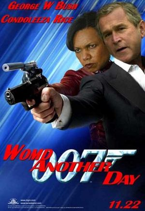

James Bond
 De: La Frikipedia, la enciclopedia extremadamente seria.
De: La Frikipedia, la enciclopedia extremadamente seria.
De la serie grandes personajes:
| Nacimiento
|
Información Clasificada (Psst: ya esta cincuenton)
|
| Muerte
|
Nunca: se renueva
|
| Ocupación
|
Explotar cosas, acabar con sueños ingeniosos
|
| Nacionalidad
|
Al servicio secreto de su majestad del Reino Hundido, pero defiende a medio mundo
|
| Malo o bueno
|
Bueno, pero de métodos cuestionables (Guiño guiño, codazo codazo)
|
| Atentados contra la humanidad
|
Detener divertidísimos e ingeniosos planes
|
| Religión
|
O es Ateo o ve a un psicólogo muy bueno
|
| Notas
|
"Bond... James Bond"; estilo incomparable
|
James Bond es un espía que trabaja para la no-inteligencia Británica (MI6), de procedencia Alemana, que cambia de cuerpo cada 4 misiones y es mandado por la viejita esa de MI6. Es un perro de primeras, popularizó la frase "martini con vodka, mezclado, no agitado" e invento la exitante frase para las putas que habitan en Gringolandia "My name is Bond, James Bond".
James Bond tiene la habilidad de tirarse cuanta mujer se le cruce para sacar la información que necesita.
 La vida de James Bond fue llevada al cine también
Biografía de un agente del MI6
Bond es en realidad un Censurado Censurado Censurado, su verdadero nombre es Censurado Censurado Censurado, nacido en Censurado, el Censurado. Su juventud fue difícil debido a Censurado Censurado Censurado Censurado, y los diversos Censurado Censurado comunes en Censurado.
Siendo un joven problemático Censurado, y es que Censurado Censurado, por que la inteligencia británica prefiere Censurado Censurado Censurado Censurado Censurado, pero en este caso Censurado Censurado Censurado.
El modo de operación fue sencillo: Censurado Censurado Censurado Censurado Censurado Censurado Censurado Censurado Censurado Censurado Censurado; entonces se escogio a diversos proscpectos, Bond entre ellos. Generalmente se trataba de jovenes inadaptados y a veces hasta violentos, muchos de lo cuales fueron Censurado Censurado Censurado Censurado Censurado Censurado Censurado Censurado, por lo hoy en día todo ya esta previsto de antemano.
Una vez que Bond se llego a este punto tubo que Censurado Censurado Censurado Censurado Censurado Censurado, debido a la traición de Censurado Censurado que aliado con Censurado Censurado, en el año de Censurado Censurado,que casi acaban con el Mundo como tal y como lo conocemos.
Salvados todos los problem Censurado Censurado Censurado Censurado, y es así como paso con Bond.
Sin mucho tiempo para el descanso, Bond paso a Censurado Censurado, concretamente en la isla de Censurado. Finalmente se encontro cara a cara con Censurado Censurado Censurado, una mujer muy atractiva, que resulto trabajar para Censurado Censurado Censurado. Luego tubo que localizar a Censurado Censurado Censurado, con ayuda de Censurado Censurado y entonces Censurado Censurado Censurado Censurado Censurado Censurado Censurado Censurado Censurado Censurado Censurado Censurado Censurado Censurado Censurado y así todo exploto.
Actualmente Bond se en cuentra en Censurado Censurado Censurado, tratando de Censurado Censurado Censurado Censurado Censurado.
Moraleja: Sencillamente, en caso de dudas o si la vida peligra recuerda: Censurado Censurado Censurado Censurado Censurado Censurado . Ademas ahora no se llama james bond sino... DON JORGE!!!!
Articulos de James Bond
Las técnicas de infiltración de Bond son de probada eficacia.
- Laser Omega: Reloj Omega modificado por MI6 para ser multiusos, similar al iphone. El reloj cuenta con rayo láser que corta lo que sea, un arma denominada Sonic Boom (explosión sonica), GPS, SMS, celular, servicio a internet via Internet Explorer,
compartimiento para guardar notitas, despachador de condones, despachador de cinta adhesiva y tambien da la hora.
- Nike Air Jaguar: Unas deportivas con propulsor sónico para volar, patines, traen dentro una navaja, otro reloj rolex de repuesto, reproductor de mp3 con todas las de timbiriche, se abrochan los cordones solos, Google Earth, Gmail y también se convierten en zapatos para smocking.
- BatiAston Martin DB9: Un coche como lo vieron en Batman, trae ametralladoras pesadas, lanzamisiles, sistema de camuflaje al estilo Predator, Asiento eyector, Muñeca Inflable de emergencia, Una macbook integrada en el portadocumentos con servicio a internet, un dvd para que vea sus películas porno. Se podría decir que es el auto de ensueño pero el muy marica de Bond se empeña en destruirlo película tras película.
Villanos clásicos
- Dr. No: Originalmente en el guión su nombre era "Dr. Yes". Es un decrépito científico que pertenece a una organización secrete llamada SPECTRE (Sociedad Penitenciera Exclusiva Comunista, Terrorista, Racista y Extremista). Su mayor logro es el de haberse auto-sometido a una cirujía donde cambio su corazón al lado ezquierdo.
- Red Grant: Asesino profesional. En el inicio de "Desde Rusia
haciendolo con Amor", se las jugó a todos cuado hizó creer que había asesinado a James Bond, cuando solo era un vagabundo caracterizado para su entrenamiento. Inteligente, fuerte, apuesto, tenía todo lo que se necesita para hacer frenta a James Bond, sin embargo es asesinado en un épico combate.
- Goldfinger: (Disculpen, pero nuestros ingenieros están trabajando viendo esta película)
- Emilio P. N. Largo: Número dos en la organización SPECTRE. Su misión era secuestrar dos bombas de la OTAN a cambio de 100 libras inglesas. Primer villano del cine en usar un parche en el ojo. Largo salía con Domino, su "sobrina", la sedujo James Bond para extraer información
y saciar sus necesidades biológicas.
- Jaws: Grotesco gigante con mandíbulas de acero. Es considerado uno de los mejores villanos creados después de Megamente. Su coeficiente intelectual era muy bajo en comparación a los demás. Capaz de desmarañar un auto con sus manos, quebrar seguros con sus dientes e introducirse en pequeños armarios, es el único villano que ha logrado hacer temblar el vodka martini de Bond; también es el único villano que ha sobrevivido para otra película y hacer un cambio al "bien".
- Franz "Pancho" Sanchéz: El primer villano latino. De moda en la época narcotraficantes como Pablo Esocobar, James Bond encontró su villano en un colombiano cuyo humilde objetivo era controlar el negocio de la cocaína. Sánchez es recordado por la escena en que golpea a su mujer con un látigo al puro estilo "La esclava Isaura".
Si fueras James Bond...
- Hubieras muerto en la primera misión que tu hubieran asignado; ahora, suponiendo que hubieras sobrevivido:
- Tendrías estilo, que seguramente no tienes ahora
- Tendrías una vida interesante (que de seguro tampoco tienes)
- No cometerías errores
- Tendrías una licencia especial para matar expedida por tu gobierno y aplicable a otros países
- Podrías acomodar en un maletín suficientes artilugios como para comenzar la III guerra mundial o desmantelar un país pequeño
- Podrías acomodar en una maleta grande suficientes artilugios como para comenzar las seis próximas guerras mundiales o como para herir levemente medio átomo del criado del secretario de Chuck Norris
- Podrías volar tu solito un laboratorio equipado con una plataforma para lanzamiento de misiles intercontinentales (¡y todo escondido en un volcán!)
- Ya habrías visitado los cinco continentes, los casquetes polares ¡y hasta el espacio exterior!
- Habrías tenido relaciones con al menos medio centenar de mujeres muy atractivas procedentes de todas partes del mundo
- Y habrías matado a la mitad de ellas o bien estarían muertas por tus descuidos
- Habrías tenido relaciones
- Tendrias un penthouse reservado en cualquier sitio que visitaras
- Hubieras matado a frezzer y a cell sin ayuda de Son Goku
- Sabrías soportar tortura física y psicológica
- Y sabrías inducirte un paro cardiaco
- Tendrías una eterna (pero con estilo) tensión sexual con la recepcionista de tu jefa
- Si podrías intentar dominar el mundo
- ... o destruirlo; pero nunca lo intentarías
- Por alguna extraña razón siempre ganarías al final en los juegos de azar
- Ahora mismo serias conocido como D. Jorge
- Conocerías gente de lo más interesante y variopinta, como un tipo con un revolver de oro puro, o un sujeto con unas mandíbulas capaces de matar tiburones, o un gordito con un bombín cuyos bordes pueden de cortar piedras, o simplemente el psicópata estándar.
- No te despeinarias nunca aunque te cayeses de un avion a 7000 metros de altura.
enlaces externos
Autor(es):
- Krusher
- Nexo
- Barbadeus Motsand
- Doctor grijander
- Meloh
- Perdedor458
- Frikiman
- Aque
- Sedicehuevosnocojones
- Alex2610
Frikipedia 2005-2016, Licencia
GFDL 1.2 - Extraído por FrikiLeaks